旋转位置编码
与上下文长度扩展
先弄清楚位置如何进入注意力，再看频率如何调整，最后讨论训练和评测。
示例使用 128 维 RoPE，从 4K 扩展到 32K。token 是分词单元，不等于汉字或单词。
01 · RoPE：让注意力知道两个 token 相隔多远
先考虑一个简单问题：模型如何区分“狗追人”和“人追狗”？
词的内容相同，顺序却改变了意思。所以模型不仅需要知道“是什么”，还需要知道“在哪里”。RoPE 是把位置信息放进注意力计算的一种方法。
1. 先把注意力里的三个角色讲清楚
Token 与位置
模型先把文本切成 token，也就是分词器处理的基本单元。一个汉字可能是一个 token，也可能与其他字符合成一个 token；英文单词也可能被拆成几个 token。
每个 token 被转换成一串数字，即向量。位置编号 m 表示它在当前序列中的位置，从 0 开始。
Q、K、V 各自做什么
在每一层注意力中，模型把输入向量通过三个可学习的线性变换，得到三个新向量：
- Q（query，查询）：当前 token 用什么条件寻找相关信息。
- K（key，键）：其他 token 用什么特征与查询匹配。
- V（value，值）：匹配之后，实际参与汇总的信息。
可以把它们理解成“搜索条件、索引、内容”。这是帮助理解的比喻，不代表向量的每一维都对应某个可读的语义。
当前位置 m 与候选位置 n 的匹配分数是：
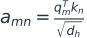
这里，qₘ、kₙ 是对应的 Q、K 向量；上标 T 表示转置，乘起来得到点积。dₕ 是一个注意力头的维度，除以它的平方根用来控制分数尺度。
随后用 Softmax 把分数变成和为 1 的权重，再按权重汇总 V。分数越大，通常得到的权重越大。
对于因果语言模型，还要在 Softmax 前遮住未来位置。这样预测下一个 token 时，模型只能使用已经出现的内容。
“多头”是什么意思
多头注意力让多个注意力头并行计算，各自使用自己的 Q/K/V 表示。RoPE 通常在每个头内部应用，而不是把整个模型的隐藏维度当成一个旋转空间。
后文的 d 专指参与 RoPE 的维度。示例让 d = dₕ = 128；一些模型只旋转头内的部分维度，或者 Q 与 K 的头数不同。
2. 为什么需要位置编码
只看 Q 和 K 的内容匹配，注意力没有完整的词序信息。位置编码负责补上这部分信息。因果遮罩会限制可见范围，但它不能替代具体的位置表示。
早期 Transformer 把位置向量加到 token 的输入向量上。位置向量可以是可学习的，也可以由正弦、余弦计算。
两者不能混为一谈：学习式位置表可能受表长限制；正弦位置编码可以计算更大的位置。 能算出来，不等于在更长文本上一定工作得好。
RoPE 换了一个注入位置的地方：它不直接改输入 embedding，而是在注意力打分前，按位置旋转 Q 和 K。
3. 先看一个二维例子
把一个二维向量画成平面上的箭头。RoPE 按位置编号转动它：
ω 是每前进一个 token 增加的角度，单位是“弧度/token”。弧度是角度的另一种单位：一整圈为 2π 弧度，1 弧度约为 57.3°。
φₘ 是位置 m 对应的旋转角。旋转改变方向，不改变向量长度。
假设这一对维度的角速度为每 token 10°，Q 原来指向 30°，K 原来指向 10°。这个角速度只是教学用数字。
Q 在位置 7：旋转 70°，新方向是 100°。
K 在位置 12：旋转 120°，新方向是 130°。
两个新方向的差为 −30°，也就是：
位置的贡献只剩下 7 − 12。 如果两个 token 同时向后平移 10 个位置，位置差仍为 −5，这部分计算不变。
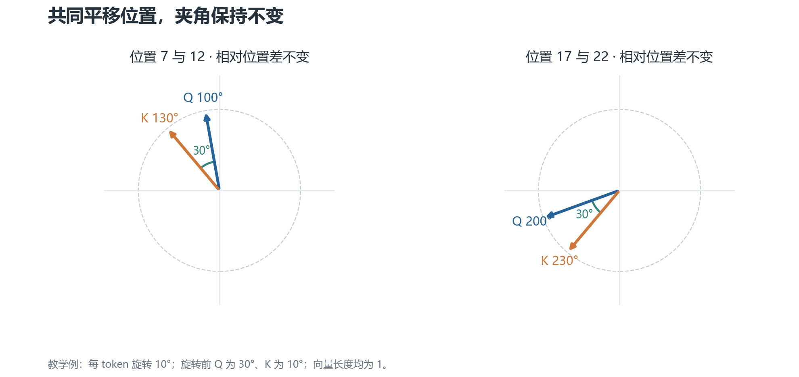
看图时关注夹角。 左边使用位置 7 和 12，右边改成 17 和 22。两支箭头的绝对方向变了，但相对夹角不变，因此在这组固定 Q/K 下，点积不变。
这里有一个重要限定：我们固定了旋转前的 Q 和 K。真实模型的 Q/K 本身取决于上下文，不能因此说“任意两段文本只要距离一样，注意力分数就一样”。
4. 二维旋转如何变成 RoPE
对一对坐标 (x, y)，旋转角 φ 后的新坐标是：
RoPE 对 Q 和 K 的坐标对分别做这个操作。一个 128 维的旋转向量可以分成 64 对，每对都在自己的二维平面中旋转。
“二维平面”在这里是数学上的分组，不是模型里真的有 64 个物理表盘。
教学上常用相邻维度配对，如 (0,1)、(2,3)。实际实现也可能把前后两半配对；只要权重布局和旋转约定一致，两种写法都可以。迁移代码时不能只改配对方式。
5. 为什么每对维度要用不同角速度
如果所有维度都用同一个角速度，就只得到一种周期变化。RoPE 用一组快慢不同的角速度，提供多个尺度的位置特征。
常见的频率安排是：
i 是坐标对的编号；d 是旋转维度；b 是底数。经典示例取 b = 10,000。
第 0 对的 ω₀ = 1，每前进一个 token 转 1 弧度。往后的坐标对转得越来越慢。
如果想知道转一整圈需要多少 token，可以计算 波长：
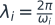
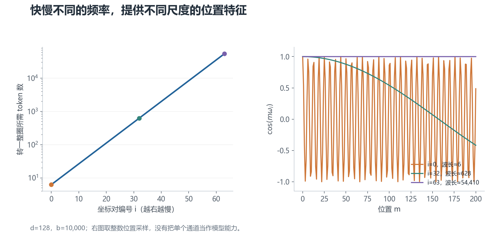
左图看尺度，右图看变化速度。 在 d = 128、b = 10,000 下，第 0 对的波长约为 6.28 token；第 32 对约为 628 token；第 63 对约为 54,410 token。
快的通道让相邻位置有较大的角度差；慢的通道让较大距离仍产生缓慢变化。这是频率设计的直觉，不能理解成“某一对维度只负责语法，另一对只负责长文检索”。模型如何使用这些特征由训练决定。
多频率也不意味着无限长度下的位置绝对不会混淆。有限维表示和有限计算精度，都需要纳入实际考虑。
6. RoPE 在哪里使用，V 为什么通常不旋转
标准的处理顺序是：先得到 Q/K/V，按头组织，再对 Q/K 应用 RoPE，接着计算匹配分数、加遮罩、做 Softmax，最后汇总 V。
只旋转 Q/K 已经能让匹配分数包含相对位置。标准 RoPE 因此保留 V 的原有表示，用它承载被汇总的内容。
这是一种设计选择，不是“旋转 V 在数学上没有意义”。其他注意力结构可以采用不同设计，但不能与标准 RoPE 混在一起解释。
RoPE 通常没有额外的可学习参数，不过生成或缓存正弦、余弦，以及执行旋转，都有计算和存储成本。
7. 先记住这三件事
RoPE 用位置决定旋转角。 Q 和 K 在打分前被旋转。
固定旋转前的 Q/K 时，旋转带来的位置项由相对位置决定。 严格推导见数学补充。
频率设计提供位置特征，不保证长度泛化。 长文本还需要合适的数据、训练和评测。
下一章：如何扩展上下文长度。
02 · 从 4K 到 32K：位置该怎么处理
上一章解释了 RoPE 如何表示位置。这一章讨论另一件事：模型只在较短序列上训练过，现在希望它处理更长序列。
下面统一用一个例子：原训练长度为 4,096 token，目标长度为 32,768 token，扩展倍数为 8。
1. 先区分三个容易混淆的长度
训练序列长度是训练中实际使用的长度。不同训练阶段可能采用不同长度，也可能混合使用长短序列。
允许输入长度是实现和配置允许接收的长度。把配置中的上限改大，只说明程序可能接受更长输入。
有效上下文长度是模型在给定任务上能可靠使用的范围。它需要通过评测确认，而且检索、推理、总结等任务可能得到不同结果。
所以，“配置支持 128K”和“模型能够可靠推理 128K 内容”不能直接画等号。
2. 外推与内插分别是什么
外推：继续使用原来的位置规则，计算训练范围以外的位置。例如仍然用 mωᵢ，只是 m 从几千增长到几万。
内插：把更长的坐标范围压回原来的尺度。例如把位置 m 换成 m/8，使目标长度边界对应原来的训练长度边界。
这里的“内插”是位置尺度映射，不是在两个 token 之间插入新的 token。
RoPE 的公式能够计算任意位置，但模型不一定适应这些位置产生的表示。这叫 分布偏移：推理时的输入特征、距离或任务条件，与训练时不同。明显超出训练分布的情况常被称为 OOD（out of distribution）。
3. 直接外推为什么可能出问题
看一对转得很慢的维度。在 4K 范围内，它可能只转过一小段；扩展到 32K 时，转过的角度明显更大。
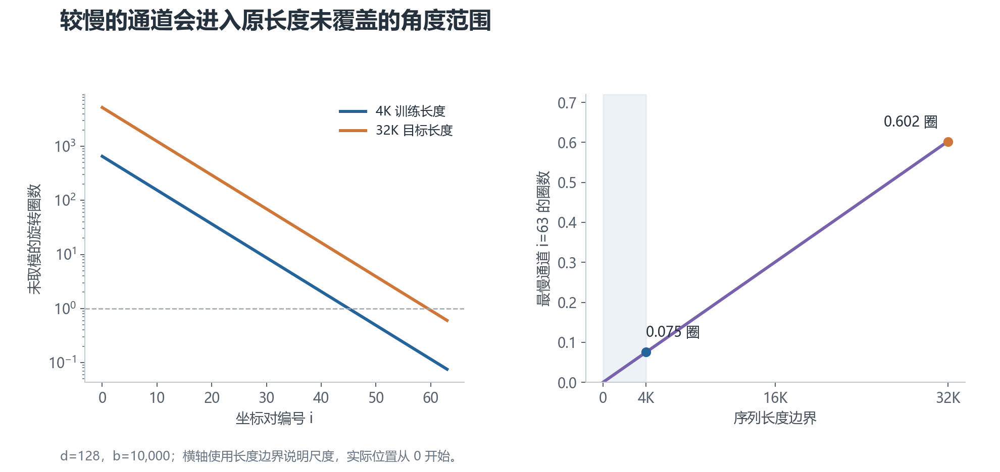
图里画的是未取模的旋转圈数。 最慢的一对从约 0.075 圈增至约 0.602 圈。右图说明：它进入了训练长度内未覆盖的角度范围。
高频通道在训练范围内已经绕过很多圈，但也不能说它“绝对不怕外推”。单个通道的相位重复，不代表多通道组合、相对距离分布和注意力行为都保持不变。
长文本还增加了干扰信息、候选位置和任务难度。低频相位变化是理解外推风险的一条线索，不是所有失败的唯一原因。
4. PI：把所有位置统一缩小
Position Interpolation（PI，位置内插）采用最直接的比例变换。
设扩展倍数为：
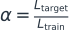
计算旋转时，把位置改为：
在本例中，m/8 把 32K 的位置尺度映射回 4K。位置编号实际从 0 开始，所以目标末尾是 32,767，不是 32,768；这里用长度边界说明比例关系。
从另一种写法看，它等价于把所有角速度统一除以 8：
它改善什么，又改变什么
PI 控制了各通道在目标长度下的角度范围，减少直接跨入新范围的问题。
代价是相邻两个 token 的角度差也缩小了。原来相差 1 个位置，现在在映射坐标中只相差 0.125，模型熟悉的位置特征发生变化。
这可能影响短程行为，但不能说模型一定“分不清相邻词”。内容表示仍然存在，变化是否影响性能以及影响多少，需要测量。
PI 通常配合长序列继续训练，让模型适应新尺度。原论文报告的适应成本较低，也不能反过来概括成“必须大量重训才能勉强补救”。
5. NTK-aware：快的少改，慢的多改
PI 对所有通道一视同仁。NTK-aware scaling则尝试保留最高频，把更大的缩放留给低频。
这个名称借用了神经切线核（NTK）的分析视角。理解这里的频率变换不需要先学习 NTK 理论，也不应把名字理解成性能保证。
一种常见的静态规则是把 RoPE 底数改为：
将新底数代回频率公式，会得到：
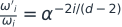
第 0 对不变，最后一对恰好缩为原来的 1/α，中间逐渐过渡。这解释了它为什么能保留最高频的相邻位置角度差。
但中间通道的缩放小于 PI 的压缩程度，它们在目标长度下仍可能进入原训练范围以外的角度。保留最高频不等于所有短程行为完全不变；缩放最低频也不等于消除所有分布偏移。
有些实现还提供 dynamic NTK，根据当前序列长度改变缩放。它与固定的静态规则不同。使用 KV cache（缓存已经计算的 K/V 以加速生成）时，尤其要确认旧缓存与当前旋转规则是否一致。
6. YaRN：按训练时转了多少圈来分段
YaRN把频率调整和注意力分数尺度调整结合起来。它是一种长上下文扩展方案，通常仍需适应训练与评测。
先理解“训练范围内的圈数”
对第 i 对维度，定义：
rᵢ 表示这一对维度在原训练长度内转过多少圈。
圈数多的通道转得快；圈数少的通道转得慢。YaRN 根据这个量划分频段：
- 高频段：保留原频率，即继续外推。
- 低频段：使用 PI 式的频率压缩。
- 中间段：在两种频率之间平滑混合。
用 γᵢ 表示保留原频率的权重，范围是 0 到 1：
γᵢ = 1 时不缩放；γᵢ = 0 时完全内插。
典型规则用两个圈数阈值定位过渡区，例如 βfast = 32、βslow = 1，再在通道编号上做 线性 ramp（渐变权重）：让 γᵢ 从高频端的 1 均匀下降到低频端的 0。
不同实现的取整、边界与配置项可能不同，不能仅凭一条示意曲线互换实现。
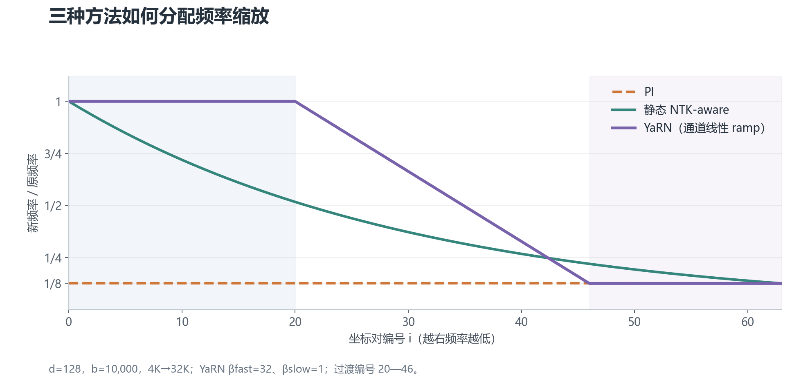
纵轴表示新频率/原频率。 1 表示不改，1/8 表示压缩八倍。横轴越向右，通道越慢。
PI 是水平线；NTK-aware 从 1 逐渐降到 1/8；图中的 YaRN 保留一段高频，在中频过渡，然后让低频停在 1/8。图按明确的阈值与通道 ramp 计算，不把过渡段人为画成 S 曲线。
为什么还要调整注意力分数
先看 Softmax 如何从分数得到权重：
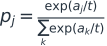
exp(x) 表示 e 的 x 次方；aⱼ 是候选位置的注意力分数，pⱼ 是其权重，t 是温度。温度小于 1 时，分数差被放大，权重通常更集中。
如果一个相关位置得分为 A，另外 N−1 个干扰位置都得分为 0，它的权重就是：
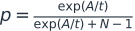
这个简化例子说明：分数差固定时，候选位置增多，相关位置的权重可能降低。真实模型的分数并不固定，也不是所有干扰位置都相同，所以不能说长上下文必然把注意力平均摊薄。
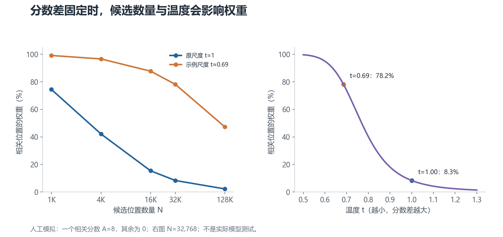
这是人工设定分数的模拟。 左图比较候选位置数量变化，右图在 32K 候选位置下比较不同温度。它展示机制，不对应任何模型的实测检索率。
YaRN 常见的尺度建议为：
如果 Q、K 都乘以 c，点积会乘以 c²，对应上面的温度 t = 1/c²。本例 α = 8 时，t 约为 0.69，而不是固定取 0.4。
这只是常见规则，具体库和模型可能有自己的尺度配置。分数放大也会强化错误匹配，因此它不能替代训练，更不能保证“大海捞针 100%”。
7. 增大底数与扩展训练是什么关系
底数越大，除了最高频，其他通道的频率越低，波长越长。
例如在 d = 128 下，b = 500,000 时最慢通道的波长约为 256 万 token；b = 1,000,000 时约为 506 万 token。具体数字取决于旋转维度。
这些较慢的特征可以参与长上下文设计，但大底数本身不是可靠长上下文的证明。尤其对一个已经训练好的模型，直接改底数会改变原有位置特征，需要评估是否适应。
也不能把所有模型统一描述成“预训练大底数，最后都用 YaRN”。模型家族乃至同一系列的不同版本，会使用不同规则。判断实际方案时，应检查精确模型版本的配置、实现和技术报告。
8. 方法之间怎么比较
| 方法 | 改动 | 需要重点验证的风险 |
|---|---|---|
| 直接外推 | 保持原位置规则 | 超训练长度后是否失效 |
| PI | 所有频率除以扩展倍数 | 改变短程位置尺度后的退化 |
| 静态 NTK-aware | 改底数，逐通道缩放 | 中间频段仍然外推的影响 |
| YaRN | 分频段缩放，加分数尺度调整 | 阈值、尺度与训练是否匹配 |
这是一组设计选择，不是从“必崩”到“终极方案”的性能排名。实际效果取决于底座模型、扩展倍数、训练数据和评测任务。
下一章：扩展训练到底怎么做。
03 · 扩展训练：让模型真正学会使用长上下文
位置缩放让模型得到一套新的位置特征。扩展训练则让模型学习如何在这套特征下，处理更长的输入。
训练的目标不是把长度配置数字改大，而是同时做到：长文本能力有提升，短文本能力可接受，训练与推理成本可承担。
下面讲的是工作流程，不是针对某个模型已经验证过的训练配方。没有具体模型、硬件和数据时，学习率、步数与批量不能凭空定死。
1. 先给扩展目标写一个可检验的定义
假设一个 4K 模型需要扩展到 32K，先明确希望它做什么：跨文档检索、阅读长代码、总结长报告，还是根据分散在多处的信息进行推理？
任务不同，数据和评测都不同。一个模型能从末尾复述目标字符串，并不说明它能比较报告开头和结尾的两组事实。
还要写下短文本退化容忍度，以及推理延迟、显存等成本上限。这些将决定是否接受某次扩展结果。
2. 先检查底座模型，再决定缩放方案
最少检查以下信息：
- 精确模型版本、分词器与模型代码版本。
- 原始训练长度、当前允许输入长度，两者是否相同。
- RoPE 底数、旋转维度、缩放类型与注意力尺度配置。
- 是普通多头注意力，还是使用共享 K/V 头、滑动窗口等结构。
- 训练代码与推理引擎能否用同一套位置规则。
滑动窗口注意力只让每个位置直接查看附近一段内容。它能降低部分成本，但不能简单当作全序列注意力使用，长距离信息的传播路径也不同。
KV cache用于推理时缓存已计算的 K/V。它与训练时用于节省中间激活的技术不是一回事。位置缩放规则如果不一致，缓存中的 K 可能与新计算的 Q 不匹配。
先在小规模样本上比较原模型、直接外推、候选缩放方案。选好候选后再投入长序列训练，不把“没有训练的配置修改”和“训练后的模型提升”混成一个结果。
3. 长训练样本应该包含什么
长文不只是更多字
优先使用结构完整、上下文关系自然的长文档，例如章节完整的报告、带依赖关系的代码或跨段讨论。
把互不相关的短文本拼到 32K，确实能形成长张量，却不一定提供长距离学习信号。模型可能只在每个短片段内完成预测。
如果使用 packing（样本打包），即把多条样本拼进同一个训练序列，需要明确：不同样本之间是否允许互相注意、位置编号是否重置、损失如何计算。否则训练条件可能偏离实际使用场景。
要让远处的信息真的有用
可以加入需要跨段使用信息的任务：在远处查定义、关联多个证据、追踪代码符号、对照前后约束等。
训练数据应覆盖答案或证据出现在开头、中间、末尾的情况。只让关键信息靠近问题，会让评测高估模型的长距离能力。
保留短样本
扩展训练会改变位置规则或模型权重。混入一定比例的短样本，有助于维持原来的短文本行为。具体比例要通过消融比较，而不是直接套用一个固定数值。
还需要去重、清理低质量文本，并保证验证集与训练集隔离。长文档被切成多个窗口时，尤其要避免同一篇文档的相邻窗口跨训练集和验证集泄漏。
4. 继续预训练和监督微调有什么区别
继续预训练沿用下一个 token 预测等语言建模目标，在较长序列上继续训练。它让模型适应长文本分布和新的位置尺度。
监督微调（SFT）使用指令与答案，让模型学习按要求完成长文本任务。例如阅读报告后生成摘要，或根据长代码回答问题。
常见流程是先进行长上下文继续预训练，再做与使用场景匹配的 SFT；也有其他安排。是否需要两个阶段，取决于底座模型和任务，不是固定规定。
如果使用 SFT，明确哪些 token 计算损失：只训练回答部分，还是同时训练输入部分。这会影响“读长材料”的训练信号。
5. 如何安排长度和训练预算
可以逐步增大长度，例如先适应 8K，再到 16K 和 32K；也可以混合多种长度，或者直接使用目标长度。逐级扩展便于观察退化，但它不保证一定优于其他安排。
每个阶段都应该用评测决定是否继续，而不是只有训练损失下降就自动升级。训练损失是衡量当前预测错误程度的数值；学习率控制每次更新参数的幅度，两者不是同一个量。
用 token 数看预算
一步里处理多少 token，大致由下面的乘积决定：
L 是序列长度，Bseq 是所有设备及梯度累积合计的序列数。不同长度的实验如果只比较训练步数，预算可能差很多。
梯度累积把多个小批次的梯度累加后再更新权重，用来增加有效批量；它不会让单条超长序列本身更容易放入显存。
记录总训练 token 数、真实有效 token 数和样本长度分布。含有大量 padding（用于对齐长度的填充位置）的训练批次，标称 token 数和有效数据量也可能不同。
长度增加后，成本为什么上升
标准稠密自注意力需要考虑位置对，注意力计算量随序列长度近似二次增长。从 4K 到 32K，单条序列的这一部分约增加到 64 倍。
这不是整个模型总运行时间的固定倍数。投影和前馈网络等部分还有不同的成本，批量、内核和硬件利用率也会影响实测结果。
FlashAttention通过更高效的计算与访存，避免在显存中完整保存巨大的注意力矩阵。它降低了中间存储和访存开销，但没有消除稠密注意力计算的二次项。
梯度检查点（gradient checkpointing）少存一些中间激活，反向传播时重新计算，用额外计算换显存。更长序列还可能需要序列/上下文并行等技术，应根据实际瓶颈选用。
6. 每个训练阶段应该测什么
基础语言建模
在独立验证集上测语言建模损失或 困惑度（perplexity）。困惑度是平均负对数似然的指数；在相同分词器和评测设置下，通常越低越好。
按长度和 token 所处位置分组观察。一个混合平均值可能掩盖文本末尾明显恶化的问题。
困惑度良好说明预测分布没有明显失常，不等于长文推理正确。
远距离检索
“大海捞针”测试是在长干扰文本中放入目标信息，再检查模型是否能找到。需要同时扫描文本长度与目标深度，也就是信息位于全文的哪个相对位置。
至少包含不同位置、多条目标和有相似干扰项的情况。把信息放在结尾得到高分，不能说明全文范围都可靠。
实际任务
用长文问答、跨段推理、代码依赖分析和摘要等任务评估。加入必须使用远处证据的问题，并检查回答是否只凭常识也能猜中。
短文本与成本
保留短文本基准和固定样例，对比扩展前后的表现。
同时记录峰值显存、输入处理时间和生成速度。输入处理常被称为 prefill，逐 token 生成常被称为 decode；两者的瓶颈不同。
7. 一张实验表至少应该记录什么
| 项目 | 记录内容 |
|---|---|
| 底座 | 模型/分词器/代码的精确版本 |
| 位置规则 | 底数、缩放类型、扩展倍数、频段阈值、分数尺度 |
| 训练 | 数据组成、长度分布、总 token、学习率、更新方式 |
| 长文本能力 | 分长度的损失、检索、实际任务结果 |
| 退化与代价 | 短文本变化、显存、prefill 时间、decode 速度 |
最好分开保存三组结果：原模型在原长度内的基线、只改位置规则的结果、进一步训练后的结果。这能看出收益来自位置调整，还是来自训练。
“LoRA 是否足够”也应作为实验问题。LoRA通过训练少量低秩增量参数来适配模型，降低可训练参数量，但不会自动解决长序列激活与注意力计算成本，也不保证与全参数训练相同。
8. 扩展成功的判据
目标长度下，模型要在指定任务上可靠使用分散的信息；短文本退化和成本应满足一开始的约束；训练与推理的位置实现还要一致。
如果只能接受 32K 输入，或者只通过一个简单检索样例，应该如实记录这个较窄的结论。
04 · 数学补充：公式成立的条件
本章不增加主线必需的新概念。它解释前文公式的来源，并说明哪些结论有条件。
1. 旋转为什么留下相对位置
记 R(m) 为位置 m 对应的旋转矩阵。每个二维块的角度为 mωᵢ，所有块组成完整旋转矩阵。
第一章的两个坐标公式，也可以写成这个 2×2 矩阵。左边是旋转后的坐标，右边是原坐标：
┌ x′ ┐ ┌ cos φ −sin φ ┐ ┌ x ┐
│ │ = │ │ │ │
└ y′ ┘ └ sin φ cos φ ┘ └ y ┘
旋转矩阵是 正交矩阵：转置等于逆矩阵。旋转的合成就是角度相加，因此：
旋转后的 Q/K 分别为 R(m)qₘ 与 R(n)kₙ。它们的点积为：
右边的旋转矩阵只依赖位置差 n−m。Q/K 的内容项仍然保留，这正是 RoPE 的相对位置性质。
如果用“Q 的方向减 K 的方向”描述同一个二维例子，会写成 m−n。两种符号约定是一致的：必须同时保持向量顺序和旋转定义，不能只看差值的符号。
2. 用复数可以怎样理解
二维坐标 (x, y) 可以写成复数 z = x + iy，其中 i² = −1。
欧拉公式把角度和复数联系起来：
乘以这个复数，相当于旋转 φ，长度不变。
两个二维向量的点积等于 q 乘以 k 的共轭，再取实部。共轭把虚部取负号，也就是把角度取负。
因此，对 q 乘以位置旋转 eⁱᵐω，对 k 乘以 eⁱⁿω 后，点积中的位置因子是 eⁱ⁽ᵐ⁻ⁿ⁾ω。这就是复数版本的相对位置推导。
如果旋转前的 Q/K 长度为 r_q、r_k，方向为 ψ_q、ψ_k，这对二维坐标贡献的点积是：
这同时保留了内容向量的长度、方向差和位置差，不能只取其中的 cos((m−n)ω) 当成真实匹配分数。
实数坐标实现和复数实现都可用。选择哪一种，取决于张量布局、库和内核，不是因为 GPU 无法处理复数。
3. “远程衰减”究竟能说明什么
可以把各通道的余弦相加，构造一个用于观察频率集合的函数：
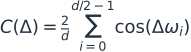
它相当于让所有通道贡献相同权重、没有额外相位偏移时的位置核示例。
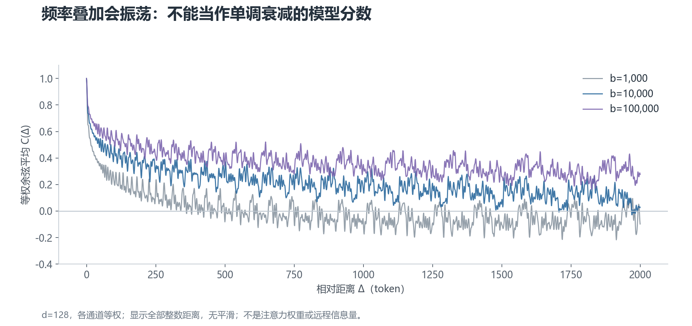
曲线会振荡，不保证逐点下降。 改底数会改变曲线的尺度，但不能把纵轴叫作“真实模型保留下来的远程信息量”。
真实点积每个二维块都有由 Q/K 决定的系数。相关理论中的衰减分析或上界，需要相应条件；它不等于任意 Q/K 的点积随距离严格单调递减。
因此，图可以帮助理解不同频率如何叠加，不能用来证明增大底数一定提高长文能力。
4. 为什么最高频是 1，不是奈奎斯特定理的唯一答案
在频率公式 ωᵢ = b⁻²ⁱ/ᵈ 中，i = 0 的指数是 0，所以最高频为 1。这是该参数化的选择。
离散位置采样时，频率有周期等价关系。例如每步角度 ω 和 ω + 2π 在整数位置给出相同的复指数。对余弦信号还存在正负频率等价。
奈奎斯特分析帮助解释这些离散频率关系，但不会唯一推出 ω = 1 最优。
尤其是 ω = 2 弧度/token 仍小于 π，不能说它已经越过奈奎斯特界限。余弦周期性反弹也不等于整个多频率 RoPE 的位置表示发生混淆。
PI 实际上连最高频也会缩放。因此，“所有扩展方法都不敢碰最高频”的说法不成立。
5. NTK-aware 缩放公式从哪里来
原频率为 b⁻²ⁱ/ᵈ，新底数设为 bαᵈ/⁽ᵈ⁻²⁾。把后者代入并与原频率相除，得到：
当 i = 0 时，缩放为 1。
当 i = d/2 − 1 时，指数为 −1，缩放为 1/α。
因此，公式满足两个端点目标：最高频不动、最低频与 PI 一样缩放。这只是频率规则的推导，不是对模型外推效果的严格保证。
6. 分块旋转的“完备性”有什么前提
考虑一类连续、保长度、按位置差组成的线性变换，可写成 R(m) = exp(mB)，其中 B 是实反对称矩阵，即 Bᵀ = −B。
线性代数给出的结论是：可以选择一个正交基，把 B 化成二维旋转生成块和可能的零块。于是这类更一般的旋转，可以改写成分块旋转。
如果 Q/K 来自自由可学习的线性投影，共同的基变换可以吸收进投影权重。从这种表示能力的意义上，二维分块不是随意丢掉了其他旋转形式。
但这不证明经典固定频率最优，不保证训练过程一样，也不覆盖任意非线性或非保长度的位置编码。更不能推出“所有长度扩展问题都只与频率有关”。
参考资料与证据范围
下面列出原始资料入口，便于核对概念和进一步阅读。正文是教学整理，没有在本次修订中运行真实模型训练，也不提供未经测量的性能承诺。
原理
- Attention Is All You Need（2017）：自注意力、多头注意力、原始正弦位置编码。论文
- RoFormer: Enhanced Transformer with Rotary Position Embedding（2021）：RoPE 的构造、相对位置性质及分析。论文
- 苏剑林，Transformer 升级之路：2、博采众长的旋转式位置编码：旋转推导与远程性质讨论。原文
- 苏剑林，Transformer 升级之路：6、旋转位置编码的完备性分析：分块旋转形式的分析。原文
长度扩展
- Extending Context Window of Large Language Models via Positional Interpolation（2023）：PI 与适应训练。论文
- YaRN: Efficient Context Window Extension of Large Language Models（2023 预印本，ICLR 2024）：分频段缩放、注意力尺度调整及训练评估。论文
- Hugging Face Transformers RoPE utilities：不同 RoPE 类型的实现与配置；实现会随版本变化。文档
正文中的静态 NTK-aware 公式是一种常见规则，不把它描述成具有统一性能保证的正式定理。动态规则、不同模型的变体需要单独检查。
长序列工程与评测
- FlashAttention: Fast and Memory-Efficient Exact Attention with IO-Awareness（2022）：减少注意力计算的访存与中间存储。论文
- Lost in the Middle: How Language Models Use Long Contexts（2023）：长文本信息所在位置影响模型表现。论文
- RULER: What's the Real Context Size of Your Long-Context Language Models?（2024）：比单一检索测试更丰富的长上下文评测。论文
图片的来源
所有插图由 src/build.py 本地生成，参数直接写在代码与图注中。
旋转图使用指定的二维向量；频率、圈数和缩放图按公式计算；注意力图使用人工设定的分数；位置核图使用各通道等权余弦求和。它们都不是模型性能实验。